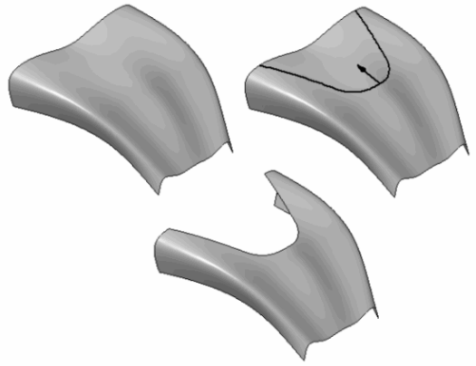
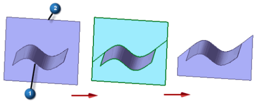

Trim command
Use the Surfacing tab→Modify Surfaces group→Trim command  to trim one or more surfaces along the input element you define. You can use a curve,
a reference plane, or another surface as the input element.
to trim one or more surfaces along the input element you define. You can use a curve,
a reference plane, or another surface as the input element.
-
If using curves,
-
They must lie on the surface you are trimming. Use the Project command to project the curve onto the surface first.
-
Closed curves that do not completely lie on the surface are not supported.
-
If using a surface as the trimming element, the surface must touch or intersect the target surface.
-

-
If the curve or surface boundary does not extend to the edges of the target surface, the trim boundary element is extended linearly and tangent to the input element.
Note:Surface 1 is used to trim surface 2. Since surface 1 does not extend to the edges of surface 2, linear extensions are added to the trim boundary element. The input element you select as the trimming tool (surface 1) is not modified.

In some instances, there may be numerous regions involved in the trim process. You can invert the selection in the Preview state. This makes it easier to define what is to be trimmed when fewer regions are to be kept and more regions need to be removed.